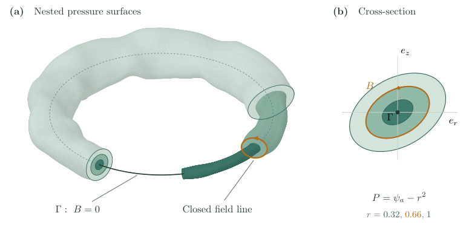

A Lean 4 certification is provided for the constructed magnetohydrostatic equilibria that serve as counterexamples to Grad's conjecture.
Abstract
For each sufficiently large $N$, we construct smooth solutions of the magnetohydrostatic equations on embedded solid tori whose regular pressure levels are nested tori, whose magnetic field vanishes exactly on a round magnetic axis, and whose group of Euclidean symmetries, even when isometries reversing the sign of the field are admitted, is exactly the cyclic group $C_N$ of rotations through multiples of $2π/N$. For each such $N$, these equilibria form a smooth one-parameter family which is locally nontrivial in the moduli space of embedded configurations and have none of the plane-reflection, axial, or helical symmetries conjectured by Grad. A Lean 4 certification of the above results is also provided.
Problem
Grad's conjecture asserts that non-isolated smooth unforced magnetohydrostatic equilibria with nested toroidal pressure surfaces must have plane-reflection, axial, or helical symmetry. The question is whether counterexamples with only cyclic symmetry exist.
Approach
For each sufficiently large N, smooth solutions of the magnetohydrostatic equations are constructed on embedded solid tori with pressure levels being nested tori and a round magnetic axis. The construction uses flux coordinates, a Nash-Moser inversion scheme, and control of symmetry groups. The resulting equilibria have Euclidean symmetry group exactly the cyclic group C_N. A Lean 4 certification accompanies the results.

Figure 1. Nested pressure surfaces for the model X^{0}(y,\phi)=R_{\phi}(NLe_{x}+\iota M_{\lambda}(N\phi)y) . (a) A cutaway showing three pressure surfaces, a closed field line, and the magnetic axis \Gamma . The axis is dashed where hidden. (b) A cross-section through the highlighted field line. We use N=8 , L=0.65 , \rho_{*}=0.40 , \delta_{*}=0.425 , \alpha_{0}=\pi/6 , and \lambda=0.375 . The cro
Results
For each large N, a smooth one-parameter family of embedded equilibria is obtained whose symmetry group is exactly C_N and which is locally nontrivial in the moduli space, exhibiting none of the symmetries conjectured by Grad. The results are certified in Lean 4.